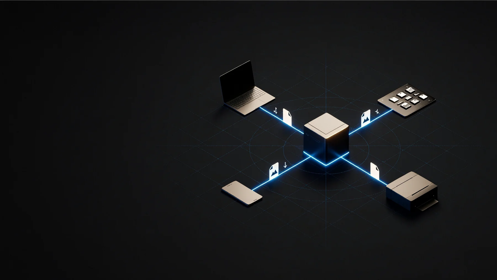
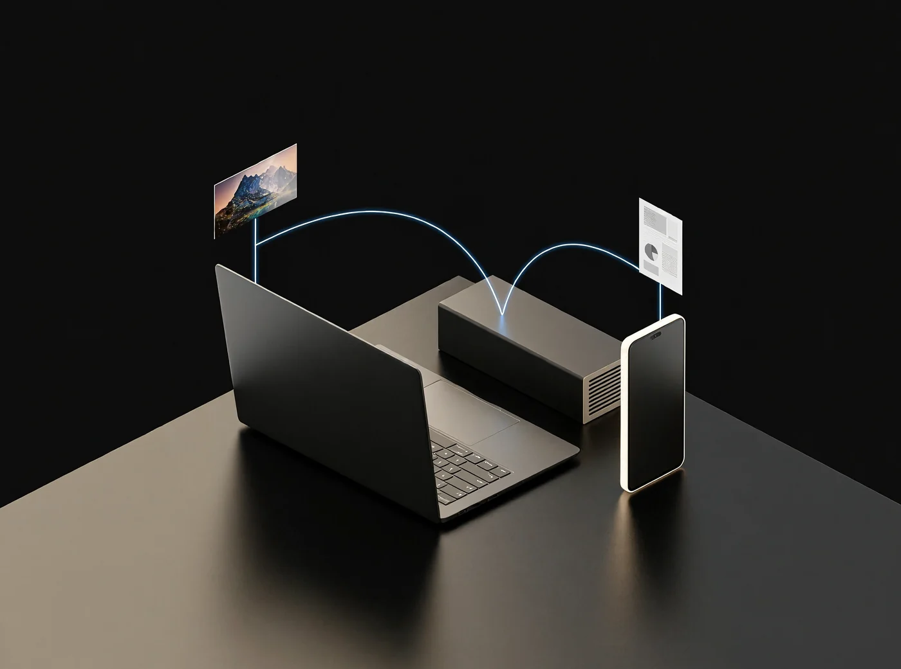
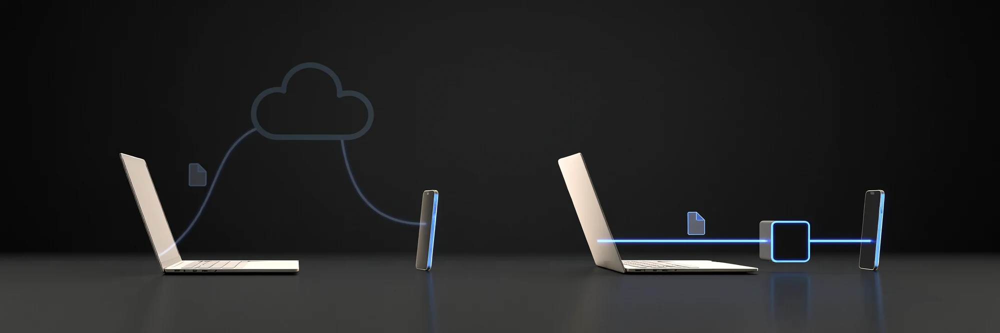

运行程序
下载约 7 MB，解压后双击，或在终端执行 ./lan-copy。
LOCAL FILE TRANSFERV0.8.1
NO CLOUD. NO ACCOUNT. JUST THE LAN.
同一 Wi-Fi 下，手机、平板和另一台电脑打开浏览器，就能互传文件、文件夹和文字。约 7 MB，一个可执行文件，不用注册。文件留在本机。
lan-copy.exe，或运行 .\lan-copy.exehttp://localhost:8080tar -xzf Lan-Copy-macOS-Apple-Silicon.tar.gz./lan-copyhttp://localhost:8080官方 Release 暂无 Linux 包，请从源码运行。
git clone https://github.com/jachy-h/lan-copy.gitcd lan-copy && go build -o lan-copy ../lan-copy，打开 http://localhost:808001 / WHY
网盘先上传再下载，聊天软件压缩照片、链接会过期，数据线一次只能接一台设备。Lan Copy 直接用你已经有的 Wi-Fi。

账号、上传、再下载。
照片被压缩，链接会过期，一次只能发给一个人。
一台设备、一个接口、一次一个文件。
02 / HOW
不用装客户端，不用注册账号。一台电脑运行，其他设备打开浏览器。
下载约 7 MB，解压后双击，或在终端执行 ./lan-copy。
同一 Wi-Fi 下，用手机相机扫码，或输入局域网地址。
把文件、文件夹拖进共享空间，或者粘贴一段文字。
三步都在浏览器里完成。手机、平板和另一台电脑都不用装 App。
下载 Lan Copy03 / FILES
内网空间是一个普通的文件夹视图：拖入文件或文件夹，手机和电脑看到同一份目录。默认目录叫「共享文件夹-lancopy」，文件不经过任何上传服务。 查看使用说明
Lan Copy 是一个在局域网内共享文件与文字的工具。启动后，同一 Wi-Fi 下的设备用浏览器打开地址即可使用。
04 / SEND
碎片快传适合发链接、验证码和临时笔记，也可以拖入图片。碎片默认 7 天到期，能一键存进内网空间的文件夹。
05 / LOCAL ONLY
手机、平板和电脑直接读写运行 Lan Copy 的那台机器。没有账号，没有上传，也没有第三方服务器。
默认没有密码，只在可信的局域网使用。
06 / PRINT
Windows 主机把已安装的打印机共享出来。选一份 PDF、JPG 或 PNG，翻页预览，确认后发送到那台电脑的打印队列。
支持 PDF、JPG 和 PNG，单个文件最大 50 MiB。
可以翻页、放大；PDF 最多 50 页。
页面显示已提交，表示任务进了 Windows 队列；出纸请在设备处确认。
07 / DEVICES
手机、平板和另一台电脑不需要安装客户端。连上同一个 Wi-Fi，扫码或打开局域网地址，就能读写同一个目录。
共享目录里看到的是同一份文件，改动会立即出现在其他设备上。

4 DEVICESONE BROWSER TAB EACHNO CLIENT
08 / PLUGINS
Lan Copy 可以导入 Docker 镜像，把插件装在这台电脑上。插件能订阅上传、删除、移动和文本变化，在操作成功后收到签名事件。
上传 docker save 生成的包，安装、启动、停止都在页面上完成。
插件在 Manifest 里声明订阅，操作成功后收到带 HMAC 签名的事件。
插件以受限容器运行。任何能打开 Lan Copy 的设备都能管理插件，只安装可信镜像。
Docker 不可用时，文件、碎片、打印和更新照常工作；插件入口会说明缺少运行时。
{
"endpoints": { "health": "/health", "events": "/events" },
"events": ["file.uploaded", "text.created", "text.saved"],
"mounts": ["shared"]
}
09 / COMPARE
和网盘、聊天软件、数据线相比，Lan Copy 只做一件事：让同一网络里的设备直接传。

Windows x64 和 macOS Apple Silicon 有发布包；Linux 用 Go 1.24+ 从源码运行。
运行 Lan Copy 的电脑上，默认目录是「共享文件夹-lancopy」。
确认同一局域网，并允许通过系统防火墙；访客 Wi-Fi 可能隔离设备。
没有。局域网内谁都能读写和更新，只在可信网络使用。
设置 → 更新会检查 GitHub 正式版，验证签名后安装并重启。
图片、PDF、Word 和 Excel 可以直接打开；其他文件先下载。
Lan Copy 本身跑在 Windows 或 macOS 主机上；只有插件服务需要 Docker。
不会。更新会保留共享目录和碎片，安装后自动重启并刷新页面。